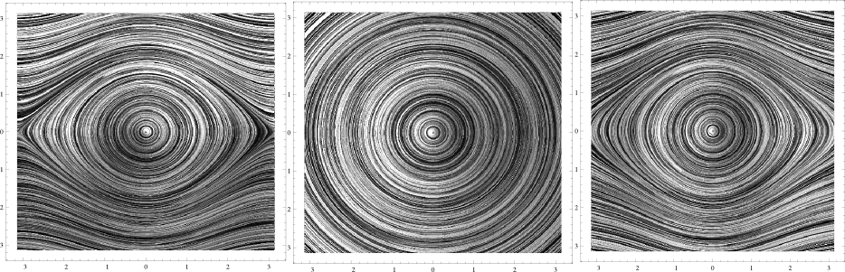
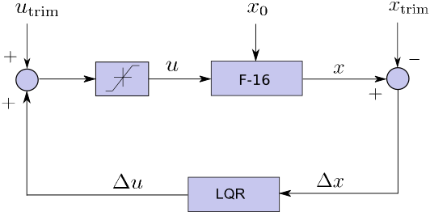
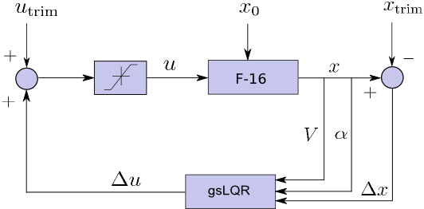
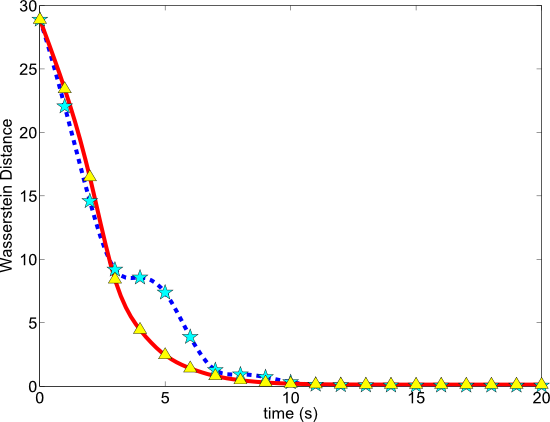

Model Validation for Nonlinear Systems
Simple pendulum
|  |
Shown above are phase portraits of a simple pendulum (left) dynamics, linearized dynamics (middle) about origin, and fifth order Taylor expansion dynamics (right) about the origin. Suppose that simple pendulum (left) is the true dynamics unknown to the modeler, and the remaining two are the proposed models. We defined an appropriate notion of closeness between dynamical systems, and showed that for all times, the true system (left) remained closer to polynomial model (right), than the linear model (middle), as expected intuitively.
Controller performance assessment for F-16 longitudinal flight
|  |  |
Shown above are block diagrams for constant altitude F-16 longitudinal flight control system with LQR (left) and gain-scheduled LQR (right). There are four states: total velocity, angle-of-attack, pitch Euler angle and pitch rate; and two inputs: thrust and elevator deflection. Stochastic intial conditions are generated by randomly perturbing the trim state vector within some admissible range. Objective is to assess the controller robustness for regulation performance, against stochastic initial condition uncertainty.
|  |
The plot on the above left shows the Wasserstein gap for F16 closed-loop state ensemble with LQR (blue dashed) and gsLQR (red solid) controllers, measured from the trim distribution. Both controllers have probabilistically comparable performance except a transient period between 3-9 seconds, when gsLQR performs better. This conclusion can be verified by looking at the state error marginal evolution on right. More details can be found here.